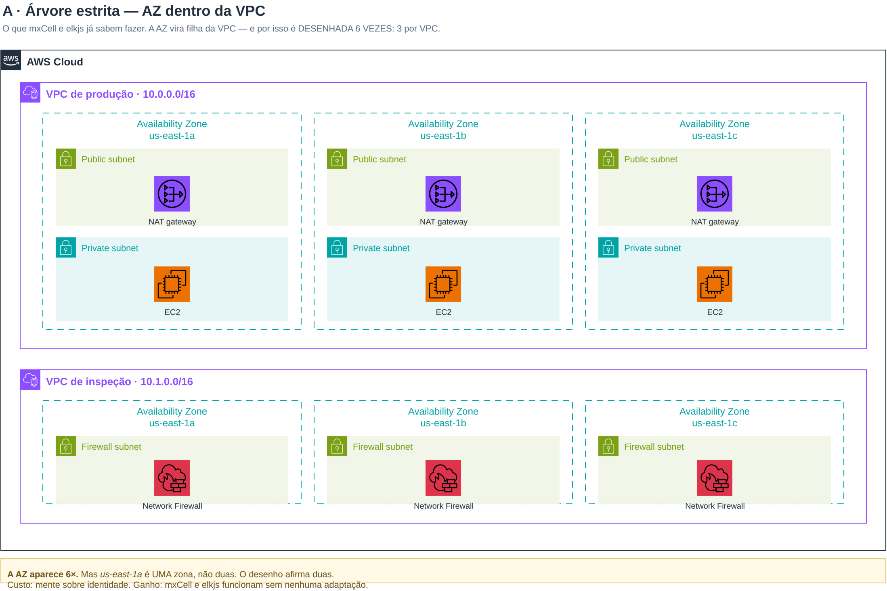

A medição do #5 se confirmou exatamente — reproduzida do zero no OOXML do deck oficial, coordenada por coordenada. Mas ela vale sobre duas lâminas didáticas. Na arquitetura real publicada pela AWS (a SRA), a AZ não é desenhada. Estes são os três desenhos possíveis, renderizados.
Extrator próprio sobre ppt/slides/*.xml, com as transformadas de grupo aninhado resolvidas.
Todo par de caixas de grupo classificado mecanicamente em contém / cruza / disjunto.
| Corpus | Caixas de grupo | AZ × VPC | Subnet | Veredito |
|---|---|---|---|---|
| Deck oficial (156 lâminas) | 28, em 5 lâminas | CRUZA 3× lâminas 9 e 21 |
sempre contida | confirma |
| AWS SRA (arquitetura real publicada) | 7, em 2 lâminas | zero caixas de AZ | 3× dentro da VPC | não se aplica |

A · a AZ vira filha da VPC — e por isso us-east-1a aparece duas vezes.
VPC › AZ › Subnet
us-east-1a 2× — duas zonas onde há umafaixa de AZ atravessa as VPCs
VPC › Subnet, zona no rótulo
Cloud › VPC › Subnet — exatamente o que o mxCell e o elkjs querem.
O que muda é o IR: a AZ deixa de ser container e vira dimensão da subnet.B′ testa a mecânica no caso difícil — a VPC de inspeção só existe em
1a e 1b, e a faixa de us-east-1c encolhe sozinha porque a banda é a união dos membros,
calculada. B″ mostra o preço integral: quatro constantes de calha eliminam toda colisão de rótulo,
sem nenhum ajuste à mão.